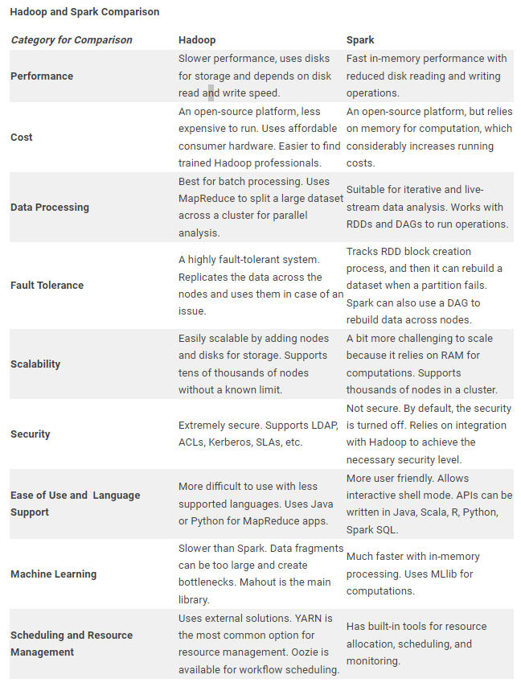
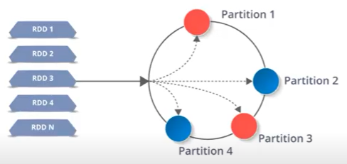
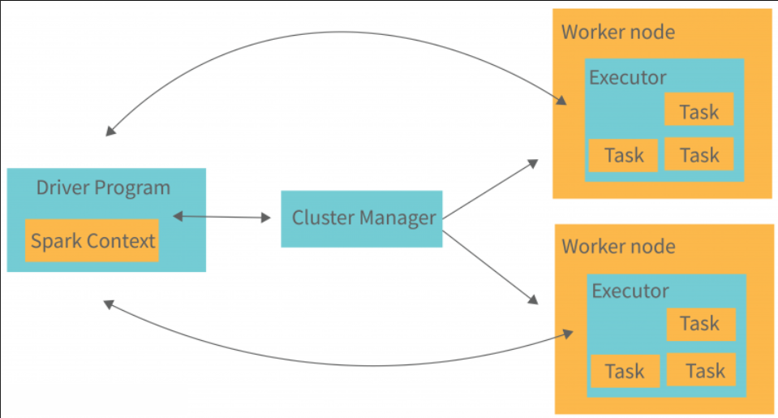
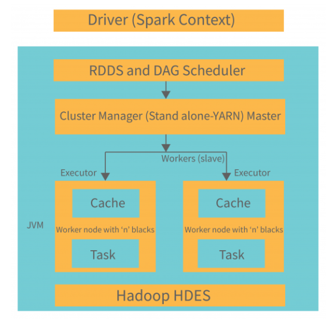
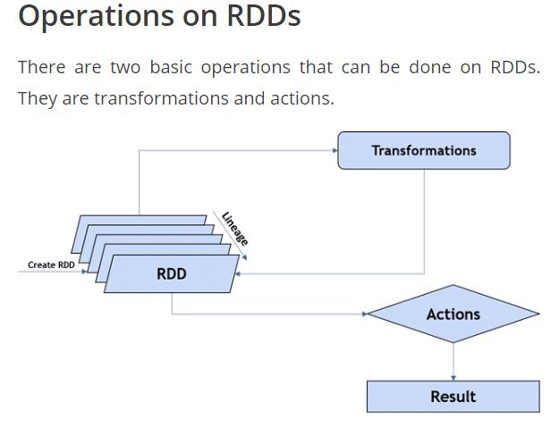
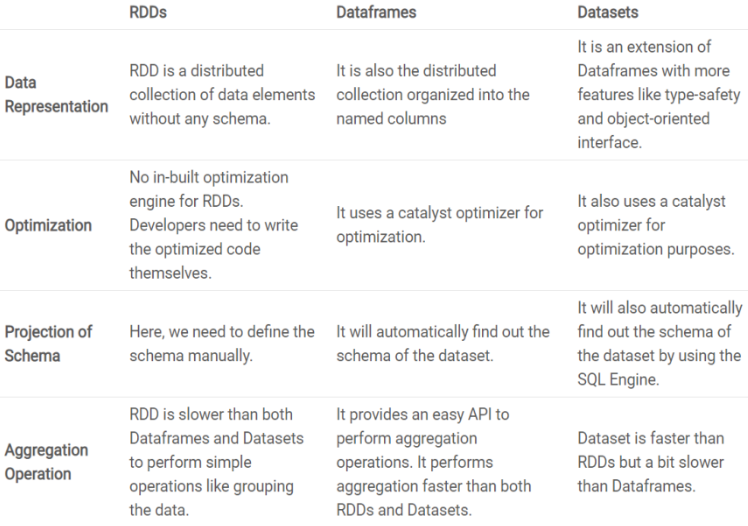

Spark#
Introduction#
- opensource
- framework-based
- process large unstructured, semi structured, and structured data
- RDDs and DAG storing and processing framework.- main two abstraction RDD and DAG
- implicit data parallelism and fault tolerance
- Polyglot : spark program can be written in scala java python and R
Definition : Apache Spark is a unified computing engine and a set of libraries for parallel data processing on computer clusters.
- Unified : A unified platform for writing big data application
- Support wide range of data analytics tasks
- Simple data loading
- SQL queries
- Machine learning
- Streaming computation over same computing engine and with a consistent set of API's
- Eg: load data using a SQL query and then evaluate a machine learning model over it using Spark's ML library
- Computing Engine :
Spark handles loading data from the storage system and performing computation on it, not permanent storage as the end itself. - Computation on memory space
- Not in disk space
- Libraries:
Provide unified API for common data analysis tasks
Supports both standard libraries that ship with engine as well as wide array of external libraries published as third-party packages by open source communities.
Eg: for SQL spark SQL , ML (MLib) , stream processing (Spark streaming ) and graph analytics(GraphX).
Apache Spark is defined as
- Fast - makes efficient use if memory and can execute jobs 10 to 1000 times faster than Hadoop's MapReduce
-
General purpose - programming languages - python, java, Scala , R, libraries for SQL , streaming(collecting real time data) and machine learning
Distributed computing platform - runs anywhere from laptop to cluster of thousands of servers. -
First release in 2014 1.0
- Second release in 2016 2.0
Introduction to big data#
Big data is a collection of data that is huge in volume, yet growing exponentially with time.
It is data with such large size and complexity that none of traditional data management tools can store it or process it efficiently.
Classified in terms of 4v's
- Volume
- Velocity
- Variety
- Veracity - truthfulness
- Unstructured and qualitative in nature
Hadoop vs Spark#

Spark Architecture#
- well defined layers
- layers are loosely coupled
- architecture is further integrated with various extensions and libraries
- based on two main abstraction
- RDDs and DAGs
RDDs | Resilient distributed Dataset(RDD)#
- Resilient:Fault torrent and is capable of rebuilding data on failure
- Distributed:Distributed data among the multiple nodes in a cluster
- Dataset:Collection of partitioned data with values

- fundamental data structure of SPARK.
- RDD can be
divided into multiple logical partitionsso that these partitions can be stored and processed on different machines of a cluster - It is
immutable in nature, - cannot edit the data in RDD but can create new RDD by performing transformation on an existing RDD.
- transformation
- these are functions - accept existing RDDs ans input and output one or more RDDs.
- map()
- filter()
- reduceByKey()
- groupBYKey()
- union()
- intersection()
- RDD in spark can be cached and used gain for future transformation.
lazy evaluated: they delay the evaluation until its really needed
Advantage
- increasing the execution speed of Spark
- basic unit of parallelism and hence help in achieving the consistency of data
- help in performing and saving the actions separately
- They are persistent as they can be used repeatedly.
Limitation
- There is no input optimization available in RDDs
- execution process does not start instantly
- No changes can be made in RDD once it is created
- The run-time type safety is absent in RDDs.


- master node have driver program which drive app.code we write behave as driver program or interactive shell if we are using it act as driver program.
- inside drive program first we create spark context which act as gateway to all spark functionalities.similar to database connection.
Using PySpark to perform Transformation and Action on RDD#
RDD
- collection of elements that can be divided into multiple nodes in a cluster to run parallel processing
- immutable, i.e once created we cannot change a RDD
- using Transformation and action operation are performed in RDD and form new RDD
- transformation are lazy in nature, which means computation are not done until we apply action.

Spark API#
Spark Session#
- entry point of spark
- takes code in R or python and convert it into code that run by jvm
- control spark through driver process
- spark session is the way user can do manipulation across clusters
- one to one correspondence b/w spark session and spark app
- spark is used in the console
spark contest#
- initializing spark functionalities
Data frame#
- relation with optimisation
- build from HIVEs, RDDs , externaldatabase , structured data files
- span across thousand of computers
- schema ( data : type)
reason to use it
- large data
- slow computations in single computer
features
- process data from kb to pb
- supports form : avro , csv , elastivc search , casandra
- store data : HDFS , HIVE , mySQL
- state art of optimisation catalyst
- support API in java, R , scala , python
- can eaily support big data tool and frame works
RDD v/s Dataframe v/s Dataset#
